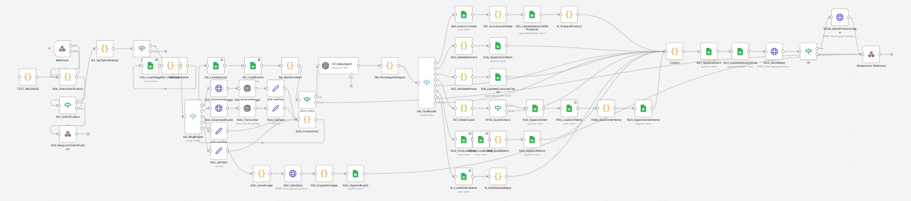
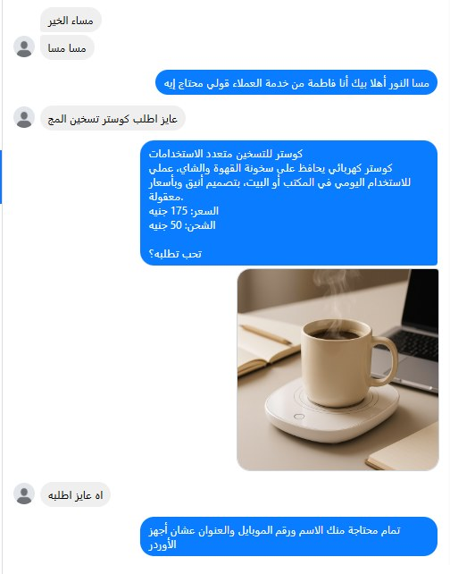

Al-Raky — AI Commerce Operating System
An autonomous, AI-powered platform that runs an online cosmetics business end to end: from product onboarding to content, publishing, sales, and operations.
01Executive Summary
Al-Raky is a fully automated, AI-powered commerce operating system built for a cosmetics retailer. It turns the entire business into an autonomous digital operation: product onboarding, market research, content generation, image and video production, publishing, customer service, order management, and operational data sync all run automatically.
The owner performs a single manual task — photograph a product, enter cost and selling price, and submit a Google Form. From that point on, the platform takes over. The multi-tenant foundation underneath it — per-client configuration and keys — later carried into a separate project for a home-appliances retailer in Mauritania, built around a different problem entirely: SalamaSons, an ad-intelligence and recommendation loop.
02The Business Problem
In the Egyptian cash-on-delivery cosmetics market, a single operator must perform 15–20 manual steps per product: research, analysis, pricing, ad copy, image design, video editing, publishing, customer replies, and shipping follow-up. This manual ceiling caps how many products can be tested each month — and in a market that runs on volume-testing, that ceiling is the profit ceiling.
03Design Philosophy
Every workflow was redesigned automation-first. Instead of asking “How can employees do this faster?”, the system asks “Why should humans do this at all?” Humans keep only the decisions that need judgment — approve a product, review content, confirm a price — while the operator's role shifts from executor to reviewer. The number of products tested becomes a function of budget, not working hours.
04My Role
I designed, engineered, deployed, and currently maintain the entire platform independently. Responsibilities spanned:
Strategy & Analysis
Business analysis, business-process engineering, system & automation architecture.
AI & Data
AI architecture, prompt engineering, content pipelines, database design.
Engineering
Backend & Node.js services, WordPress/WooCommerce, integrations, infrastructure.
Operations
Deployment, monitoring, maintenance, and continuous improvement.
05Architecture
A distributed, pull-model architecture. A central PostgreSQL database holds each product's state; a Dispatcher reads states on a schedule and triggers the right stage for each product; stateless Node.js microservices handle heavy work (scraping, image and video processing) outside the automation engine; and a unified AI Gateway abstracts three providers behind one contract with automatic fallback.
production workflow canvas
(blur credentials & keys)assets/commerce-os-n8n-canvas.png

06End-to-End Product Lifecycle
One Google Form submission triggers this entire chain, with no further human input.
Intake
The owner submits a Google Form: product images, cost price, selling price, category, and basic info.
Product Analysis
AI extracts type, features, materials, colors, target audience, benefits, objections, positioning, and use cases.
Market Research
AI studies trends, competitors, customer language, buying motivations, and pain points to build positioning.
Product Brain
A knowledge object is generated: USP, customer avatars, emotional/engagement/conversion hooks, objection handling, cross-sell ideas, sales talking points, and FAQs.
Image Generation
Commercial-quality lifestyle, studio, and campaign images are generated. The original phone photo is never used publicly.
Video Production
Promotional videos with scenario, storyboard, hooks, captions, voice-over script, and platform-specific versions.
Social Content
Facebook/Instagram posts, reels, captions, CTAs, hashtags, plus a monthly content plan and publishing schedule.
WooCommerce Listing
The product is created automatically: title, descriptions, specs, SEO, gallery, categories, pricing, attributes, tags, and metadata.
Publishing Queue
The product is slotted into the monthly social publishing calendar.
Sales-Agent Sync
The Messenger/WhatsApp AI agent's knowledge base updates instantly — every new product is sellable with no retraining.
the owner’s phone shotassets/commerce-os-before.png
campaign imageassets/commerce-os-after.png
07Key Engineering Decisions
Language vs. money, strictly separated
AI owns language, description, and visual analysis only. Anything touching money or state — pricing, order totals, stage transitions — runs in deterministic code, removing a whole class of unpredictable errors from the financial path.
Control by configuration
Dozens of database settings drive behaviour: which AI provider and model, how many posts, which video templates, brand colors, margin tiers, shipping rates, publishing on/off. Changing behaviour edits a cell, not code.
Exit-checks at every stage
Each workflow ends by re-reading the database to verify what should have been written actually was. Nothing counts as success until it is proven — turning silent failures into immediate, visible ones.
Structural locks over discipline
An asset cannot be marked “ready” while its file link is empty; the rule is enforced at one un-bypassable point, so it is structurally impossible to publish a post without an image.
08AI & Prompt Engineering
A unified AI Gateway sits over three providers (OpenAI, Google Gemini, OpenRouter) behind a single call contract, with an automatic fallback chain on failure or quota limits and per-call cost logging. Prompt pipelines generate the Product Brain, marketing copy with multiple selling angles, video scripts, image prompts, and the sales agent's knowledge — each passing through a validation layer that enforces content rules before anything is stored or published.
09Data & Database
A central PostgreSQL database is the single source of truth: products, orders, customers, content, knowledge base, automation logs, and operational/reporting data — with indexes, JSONB fields, views, and triggers. Migrating off cloud spreadsheets removed the throughput ceiling that appeared under load: query time became a function of active work, not archive size.
10Technical Stack
11Results & Impact
Messenger sales-agent conversation
(blur customer identity)assets/commerce-os-sales-agent-chat.png
